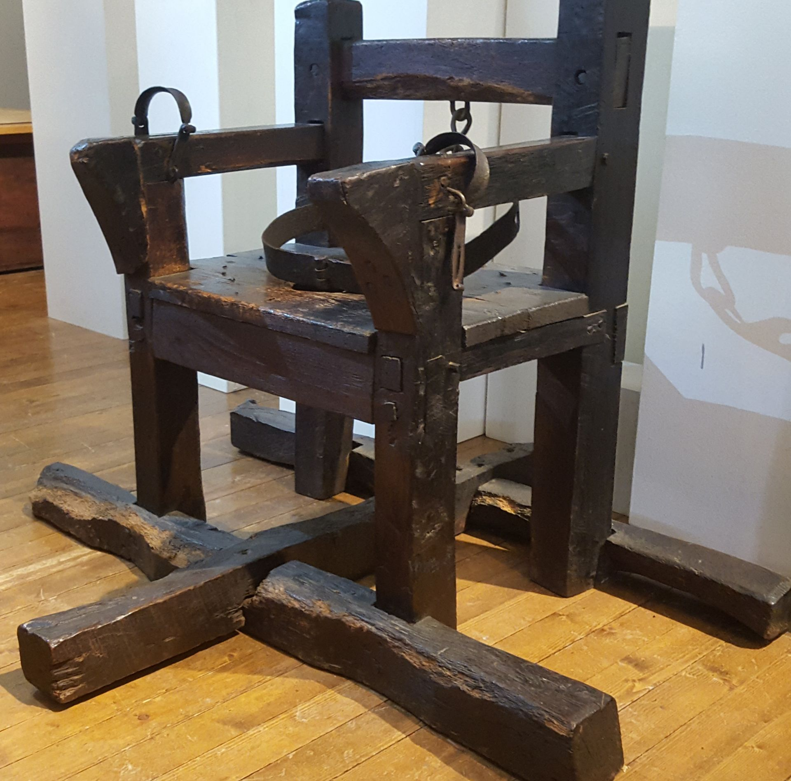

De Sint-Plechelmusbasiliek is een katholieke kerk in de Overijsselse stad Oldenzaal en een van de 23 basilieken in Nederland. De kerk is gewijd aan de heilige Plechelmus, een Ierse monnik uit de 8e eeuw, wiens feestdag sinds zijn heiligverklaring in de 10e eeuw op 15 juli op de kerkelijke kalender van het (middeleeuwse) bisdom Utrecht vermeld wordt. Rond deze datum wordt het patroonsfeest in de Oldenzaalse basiliek nog jaarlijks luisterrijk gevierd.
 Huttenkloas, zijn vrouw en zoon behoren in Twente tot de laatste criminelen die ter dood veroordeeld zijn. Om een bekentenis van Huttenkloas te krijgen werd hij 110 dagen op een dwangstoel vastgebonden. De zitting van die stoel was voorzien van spijkers. Handen en voeten werden met ijzeren boeien vastgebonden en om het middel kreeg men een ijzeren buikriem. Het historische museum Het Palthe-Huis in Oldenzaal heeft in haar collectie de dwangstoel van Huttenkloas uit de Middeleeuwen. Deze stoel die in de gevangenis van de stad Oldenzaal stond, werd nog in 1775 gebruikt tijdens de ter dood veroordeling van moordenaar Huttenkloas." Bij de achteringang van de toeristeninformatie staat een replica van de dwangstoel van Huttenkloas. Bij de toeristeninformatie kun je zelf mini replica's van 'de Huttenkloas' als souvenir kopen.